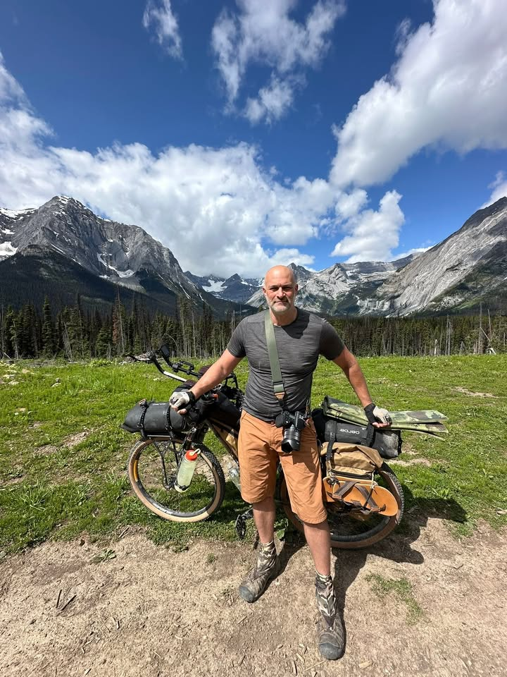
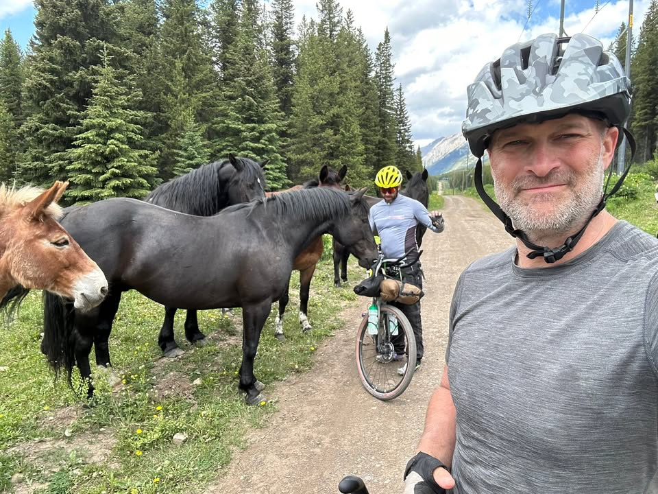
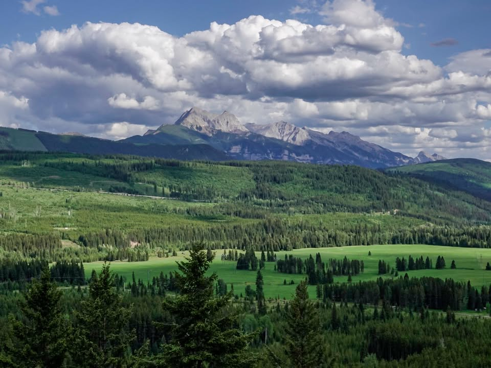
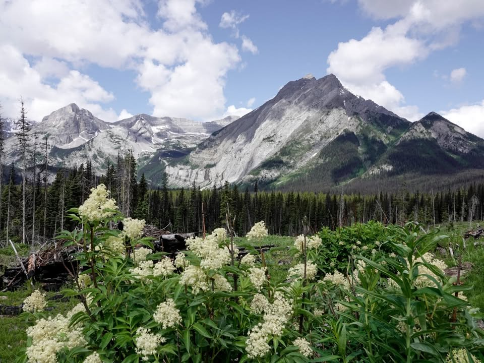
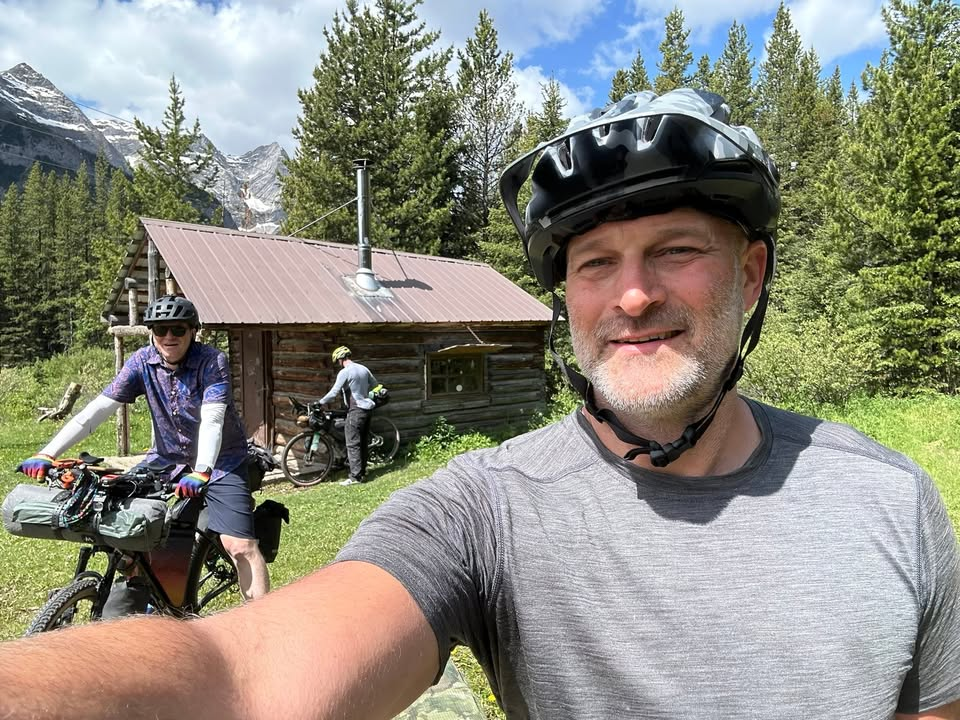

I slept in after a tiring day. I started off right with a cup of coffee and a breakfast of Ramen noodles mixed with chunks of summer sausage, a hot meal that woke me up.
Alex, who shared my camp last night, had packed up and left before sunrise. Luckily, my new friends Dan and Nate were right across the road, and we planned to leave together.

From the Journey
The day began with a solid climb into Bear Highway, where I had seen three grizzlies two years ago. This time we were not lucky or unlucky enough to encounter bears, but we did run into a friendly herd of horses. They approached, hoping for food, and when Dan shared an apple with one, I jokingly warned him to take his bite first.

From the Journey
We enjoyed rolling hills on the dirt road, and unlike last time, I did not have to walk as much. My new gear system made climbs easy and comfortable.

From the Journey
While zooming down one hill at about 30 miles an hour, I spotted an ambulance on the side of the road. I could see them working on someone, but without a bike in sight, I continued on. Later I learned it was a biker with a concussion being transported to Fernie and then likely to Calgary for a scan. He also has family in Calgary. Fortunately, another biker who found him was a firefighter and prior Green Beret. I do not know his name, but I will be sending prayers.

From the Journey
My legs feel good overall, but I have developed some pain in my left knee. On Day 1, I raised my seat by 5 mm. It has not worsened, but it has not improved either. Surprisingly, the pain bothers me most when I am sleeping.

From the Journey
The last part of our 50 miles included about 6 miles of singletrack through the woods before dropping into Elkford. We thought we secured a campsite and immediately headed to the bistro for one of the best burgers I have ever had.
After washing it down with beers, we returned to find a family had extended their camp into where we intended to pitch. We spotted some bikepackers behind them and set up our tents there.
Day 2 down, with plans to ride into Fernie and grab a hotel tomorrow night.